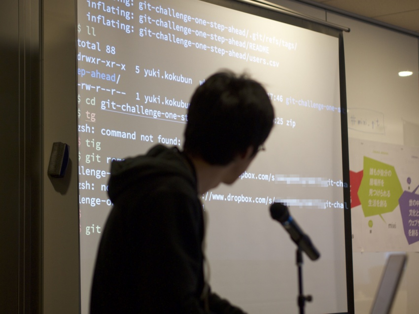
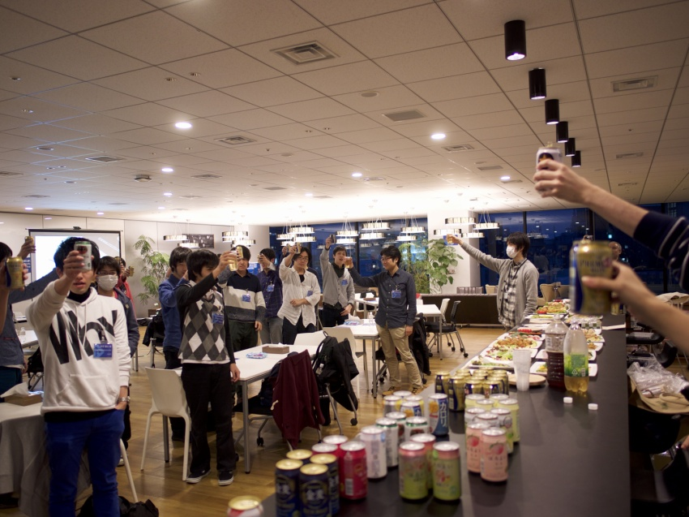
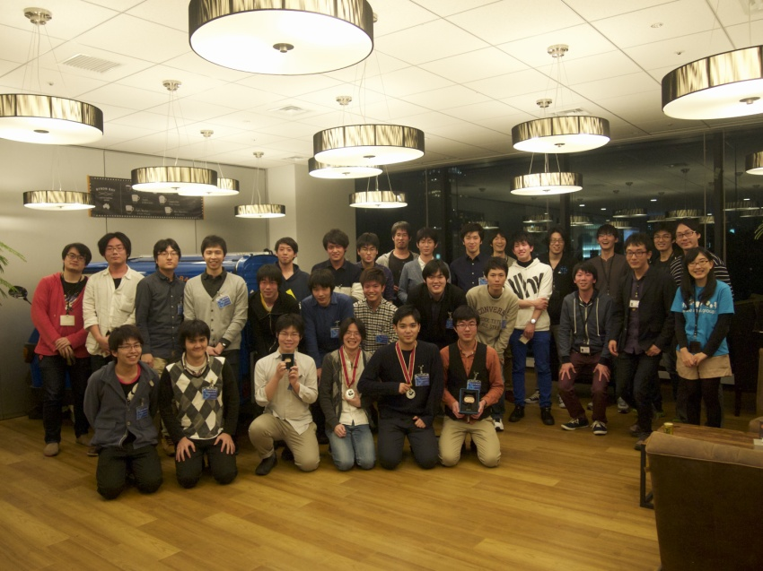

ご好評にお応えし、git challenge 第2回を2016/3/5(土)に開催しました! ご参加いただいたみなさんに、さっそくブログエントリをいくつもいただいています。 ありがとうございます!
今回の開催では、挑戦する課題群をチーム数ぶん設置するためのprivate repos, そしてノベルティ面でもGitHub Japanさまにご提供・ご協賛いただきました。 どうもありがとうございました!
難問リポジトリを解きほぐしていく競技技術イベントであるgit challengeでは、問題数 x チーム数ぶんの、大量のprivate repositoryを用います。#mixi_git pic.twitter.com/cHCq1Ml6Qk
— mixi engineers (@mixi_engineers) February 18, 2016
今回2016.3.5の開催では, これらのprivate reposを持てるだけのplanをGitHub Japanさまにご提供いただいています。この場をお借りして、改めてご協賛ありがとうございます!https://t.co/GclnnvJNx2#mixi_git
— mixi engineers (@mixi_engineers) February 18, 2016
この第2回のために、新しい設問も4問用意しました。 CI自動判定なども含めているので、一種の新規開発です。
今回は2015新卒エンジニアのお二人にも新設問をひとつづつ開発していただきました。「開発現場でこんなことがこんななっちゃった!」というストーリーがあってこそ問題の肉付けがよくなるので、たとえばこんな… #mixi_git pic.twitter.com/EMaE5XPAD0
— mixi engineers (@mixi_engineers) February 24, 2016
…ことがあったとして、解決再現可能で複雑なgit状態を作り出し、解決状態を検証するコードも書く。たぶん、通常の開発思考にゲーム開発頭とテストスイート書き思考、さらに斜め逆宙返りみたいなプログラミングでしょうね!#mixi_git pic.twitter.com/kiXMMsKEW5
— mixi engineers (@mixi_engineers) February 24, 2016
そして、実際にその設問を解けるかどうか。動作テストも含めたレビューを、今回も内定者の皆さんにもお手伝いいただきました。
来週末開催git challengeの新しい設問のレビューテスト。内定者のみなさんにリモート参加いただきました。iPadのSkypeを何枚も立てながら… 前回「ぎっちゃれ」参加者もいらっしゃいます。ご協力感謝! #mixi_git pic.twitter.com/lPH9qPq8zE
— mixi engineers (@mixi_engineers) February 24, 2016
#mixi_git は新問題のレビューをちょっとだけお手伝いさせて貰ってました。origin-of-birds（うろ覚え）は問題解決のとっかかりとして「エラーログをよく読む」という多方面に役立つ教訓を得られる良い問題（解けなかった）
— Hiroyuki Sano (@sh19910711) March 5, 2016
ほか、もろもろ準備も撮影快調!
優秀チーム向けノベルティがGitHubさまから届きました。梱包テープからしてoctocat, これはアガる!!
— mixi engineers (@mixi_engineers) February 16, 2016
2016.3.5開催git challengeのエントリ締切は2016.2.24です。善はいそげ!#mixi_git pic.twitter.com/JdyNJKInvZ
第2回git challengeの会場準備が完了しました。会場 init. 挑戦者のみなさん、お待ちしています! #mixi_git pic.twitter.com/E5GyPn8BrF
— mixi engineers (@mixi_engineers) March 4, 2016
明日はmixi git challenge！
— Pocke(ぽっけ) (@p_ck_) March 4, 2016
いよいよ、第2回めのgit challenge開催です! 会場はいつもの渋谷ミクシィ7Fコラボルーム。#mixi_git #mixi_collabo pic.twitter.com/oix8Yr4OAr
— mixi engineers (@mixi_engineers) March 5, 2016
本日は git challenge です #mixi_git
— HAL (@halhorn) March 5, 2016
git challengeにきました (@ 株式会社ミクシィ (mixi, Inc.) in 渋谷区, 東京都) https://t.co/Nt1OVyhpv1
— mktakuya (@mktakuya) March 5, 2016
git challenge (@ 株式会社ミクシィ (mixi, Inc.) in 渋谷区, 東京都) https://t.co/uksID8bpvB
— たんご🐣 (@jtwp470) March 5, 2016
mixi git challengeなーう
— TASUTEN (@tasuten) March 5, 2016
team-alphaです．orisanoプロと同じです #mixi_git
— kageです。 (@kage_miku) March 5, 2016
来てみたら同僚と同じチームだった #mixi_git
— Pocke(ぽっけ) (@p_ck_) March 5, 2016
git-challengeきたよー！#mixi_git
— ぴっぴ@天然水 (@Pippi8t8) March 5, 2016
git challenge! MKくんとチーム #mixi_git
— nasa9084@某某某某(0x19歳) (@nasa9084) March 5, 2016
#mixi_git なう
— Yu Kobayashi (@sweep3092) March 5, 2016
まずは @side_tana によるキーノートから
すごいgitたのしくまなぼう #mixi_git
— TASUTEN (@tasuten) March 5, 2016
「すごいGit楽しく学ぼう」を公開しました - mixi Engineers' Blog https://t.co/CD9h5vwO9Q
— あべ (@abcang1015) March 5, 2016
tanaさんいつもの勢い出てきた #mixi_git
— mot@飲酒解禁 (@pg_mot) March 5, 2016
「歴史を取り込んだことある人っていますか?」 #mixi_git
— Pocke(ぽっけ) (@p_ck_) March 5, 2016
「歴史・・・を取り込んだことがある人っていますか」 #mixi_git
— nasa9084@某某某某(0x19歳) (@nasa9084) March 5, 2016
parent が3つ以上あるコミットも作れるのか、知らなかった https://t.co/ivEJLI9fFI #mixi_git
— Pocke(ぽっけ) (@p_ck_) March 5, 2016
side_tana「gitには中の人がいます」 #mixi_git
— きよぽん (@kiy0p0n) March 5, 2016
中の人「ﾄﾞｰﾝ!」 #mixi_git
— Yu Kobayashi (@sweep3092) March 5, 2016
「ドーン！」 #mixi_git
— あべ (@abcang1015) March 5, 2016
. @side_tana 氏によるキーノートが終わって、第0問というかチュートリアルへ。続々解きに来ている! #mixi_git pic.twitter.com/9DeUgUT80J
— mixi engineers (@mixi_engineers) March 5, 2016
GitHub Japanに圧倒的感謝 #mixi_git
— たんご🐣 (@jtwp470) March 5, 2016
普段はwercker使ってるマンなのでCircleCIはじめて #mixi_git
— mktakuya (@mktakuya) March 5, 2016
キーノート、チュートリアルが済んだら、ひとまずみんなでお昼ごはん。お気に入り詳細を見る
お弁当 #mixi_git pic.twitter.com/OHHwSk2wnA
— kageです。 (@kage_miku) March 5, 2016
そして、会場にはGitHub Japanさまご提供のOctocatステッカーがいっぱい!
github japanさんありがとうございます！ #mixi_git pic.twitter.com/XibsC7Togz
— kageです。 (@kage_miku) March 5, 2016
GitHubステッカーたくさん頂いた #mixi_git
— nasa9084@某某某某(0x19歳) (@nasa9084) March 5, 2016
みんなでのランチタイムも終わり、13:00からいよいよ競技開始。CircleCI+herokuのスコアボードに、各チームが問題解決できたリポジトリの「緑」が徐々に灯っていきます。#mixi_git pic.twitter.com/0V47Xpoxgk
— mixi engineers (@mixi_engineers) March 5, 2016
そろそろ競技スタート #mixi_git
— kageです。 (@kage_miku) March 5, 2016
さすがに競技開始となると、みんな知見と頭脳をしぼりまくり。 TLは静かになります。
git challenge競技タイム、しばし休憩。せっかくのひな祭りなので、桜餅とお茶にしました! おとといですけどね! #mixi_git pic.twitter.com/SvBsMsYCGg
— mixi engineers (@mixi_engineers) March 5, 2016
さくらもちの差し入れありがとうございます #mixi_git pic.twitter.com/oHamM3GHBz
— kageです。 (@kage_miku) March 5, 2016
終わった！息切れしている...!!! #mixi_git
— Yu Kobayashi (@sweep3092) March 5, 2016
おわったーーーーー #mixi_git
— Pocke(ぽっけ) (@p_ck_) March 5, 2016
競技終了休憩タイム #mixi_git
— TASUTEN (@tasuten) March 5, 2016
お疲れ様でした〜〜 #mixi_git
— kageです。 (@kage_miku) March 5, 2016
全然できなかった。つらみ。 #mixi_git
— nasa9084@某某某某(0x19歳) (@nasa9084) March 5, 2016
あと5分欲しかった #mixi_git
— 白鷹(しろたか)🦅 (@hikaru__m) March 5, 2016
|←樹海| ┗(^o^ )┓三 #mixi_git
— mktakuya (@mktakuya) March 5, 2016
楽しかった #mixi_git
— たんご🐣 (@jtwp470) March 5, 2016
stagoとかtriviaやってる気分だった #mixi_git
— いんと (@int_tt) March 5, 2016
CTFっぽい感じ好き #mixi_git
— たんご🐣 (@jtwp470) March 5, 2016
本日の戦利品です #mixi_git pic.twitter.com/eDjFiEGO90
— kageです。 (@kage_miku) March 5, 2016

第2回では、問題解説を1時間に伸ばし、裏の仕掛けや疑問についてたっぷりご説明できるようにしました。
one-step-aheadは僕もやられました… #mixi_git
— kageです。 (@kage_miku) March 5, 2016
`git filter-branch`コマンドが今日の１番の収穫って感じです #mixi_git
— kageです。 (@kage_miku) March 5, 2016
origin-of-bird はガチで勉強すると git の内部構造に詳しく慣れる #mixi_git
— HAL (@halhorn) March 5, 2016
完全にCTFのForensicsやんけ #mixi_git
— たんご🐣 (@jtwp470) March 5, 2016
packedとunpackedで挙動が違う #mixi_git
— nasa9084@某某某某(0x19歳) (@nasa9084) March 5, 2016
解説の方「便利コマンドがstackoverflowに転がってる」 #mixi_git
— kageです。 (@kage_miku) March 5, 2016
すごく嬉しそうに解説してらっしゃる... #mixi_git
— Yu Kobayashi (@sweep3092) March 5, 2016
\\\\cherry-pickおじさん//// #mixi_git
— kageです。 (@kage_miku) March 5, 2016
そもそもこの問題どうやってつくってるんだよっていう #mixi_git
— nasa9084@某某某某(0x19歳) (@nasa9084) March 5, 2016
conflict-hell，マジで地獄だ・・・・ #mixi_git
— kageです。 (@kage_miku) March 5, 2016
「こんなことおきねぇよって思うかもしれないけど、実際起きたこともあるから、みなさんはこんなことにならないようにしてください」 #mixi_git
— nasa9084@某某某某(0x19歳) (@nasa9084) March 5, 2016
優勝した!!!!!!!!!!!!!!!!!!!!! #mixi_git
— Pocke(ぽっけ) (@p_ck_) March 5, 2016
HHKBの人たちになってる #mixi_git
— Yu Kobayashi (@sweep3092) March 5, 2016
はてなブログに投稿しました #はてなブログ #mixi_git
— Pocke(ぽっけ) (@p_ck_) March 5, 2016
mixi git challenge に行ってきた(優勝した) - pockestraphttps://t.co/3vUZXrX6St pic.twitter.com/CTsz3i8KlG
はてなブログに投稿しました #はてなブログ #mixi_git
— Yu Kobayashi (@sweep3092) March 6, 2016
mixi git challengeに参加してきました！ - the gluehttps://t.co/9G0l9oLgNi pic.twitter.com/3kWAniP4Ia
懇親会 #mixi_git pic.twitter.com/x1bcHDXOrG
— kageです。 (@kage_miku) March 5, 2016


おつかれさまでした!!!